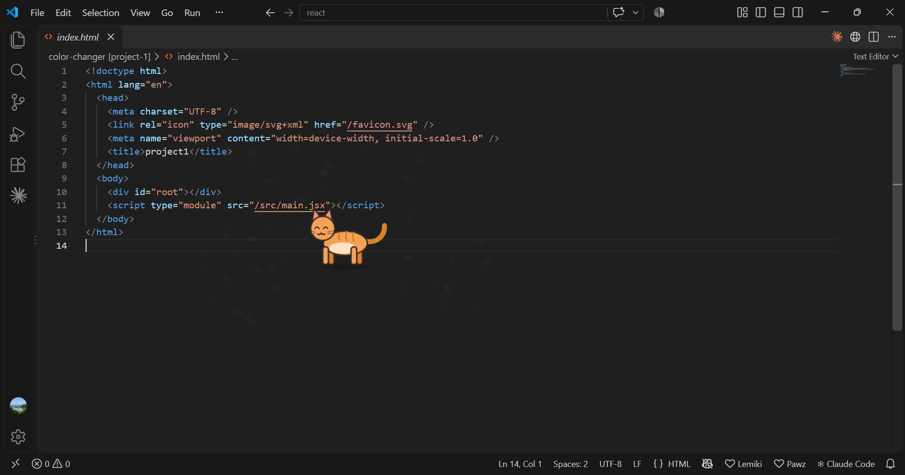
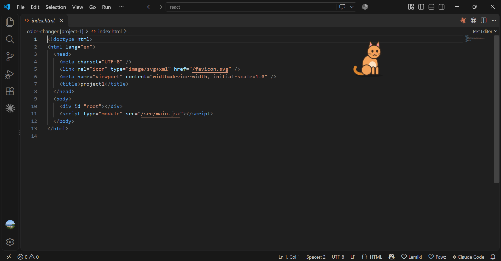
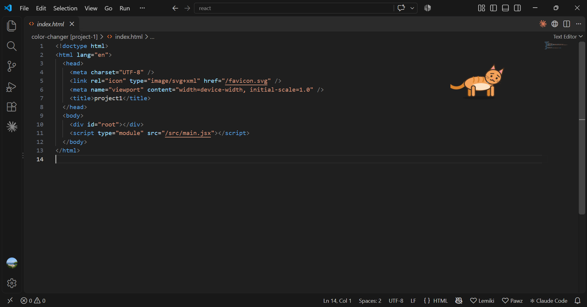

Lemiki
A little cat that lives on your desktop and reacts to your coding.
Free · Windows 10/11 · No data collected
What is Lemiki?
Coding for hours can feel a bit lonely. Lemiki puts a small cat on your screen that lives its own life: it walks, sits, naps, stretches and sometimes gets the zoomies.
Add the free VS Code extension and the cat starts noticing your work. When your build passes it jumps and throws confetti. When tests fail it droops with a little tear. You see how things went at a glance, without reading a terminal.
It never gets in your way. Your clicks pass straight through it, it never steals keyboard focus, and it never shows pop-ups.
How the cat reacts
Build passes
Jumps, spins and throws confetti.
Tests pass
Hops happily.
Build or tests fail
Droops, with a little tear.
You start typing
Glances over, curious.
You save a file
Looks up for a moment.
You go quiet
Curls up for a nap.
- Click-through: never blocks your mouse or keyboard.
- Small, medium or large: pick a size from the tray icon next to the clock.
- Works with your tools: npm, pnpm, yarn, tsc, vite, jest, vitest, pytest, go, cargo, maven, gradle, dotnet, make and more.
- Private: nothing leaves your computer.
Screenshots



Available on
Microsoft Store
The desktop app. This is the part that shows your pet.
Get it on Windows →VS Code Marketplace
Optional extension. Makes the pet react to builds, tests, saves and typing.
Install the extension →Getting started
- Install Lemiki from the Microsoft Store and open it. A cat appears on your screen.
- In VS Code, open Extensions (Ctrl+Shift+X), search Lemiki and install it.
- Run a build or your tests and watch the cat react. A ♥ Lemiki item in the status bar shows it's connected.
Questions
Where is the cat's menu?
Click the orange cat-face icon next to the clock. Windows may hide it under the ^ arrow; drag it onto the taskbar to keep it visible. From there you can hide the pet, change its size or quit.
My terminal builds aren't noticed.
Use PowerShell, bash, zsh or fish in VS Code (not the old cmd.exe), or run the build as a VS Code task (Ctrl+Shift+B).
Does Lemiki collect any data?
No. Everything stays on your computer. See the privacy policy.